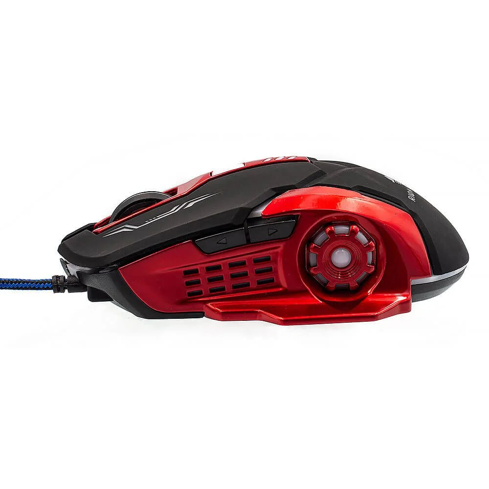
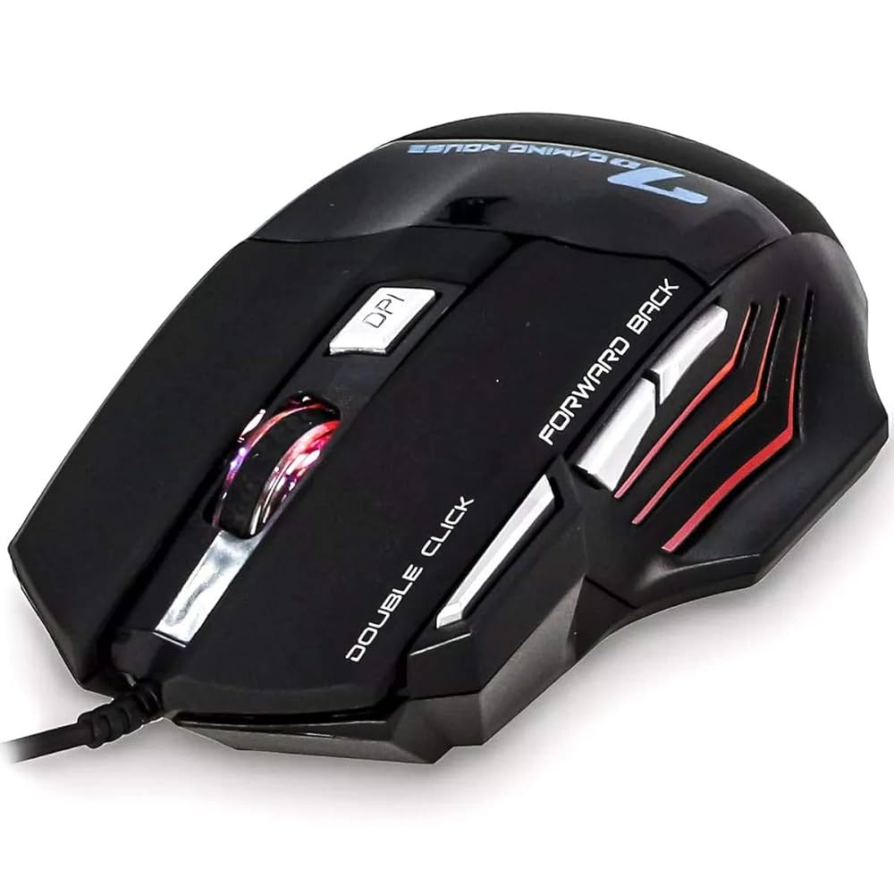
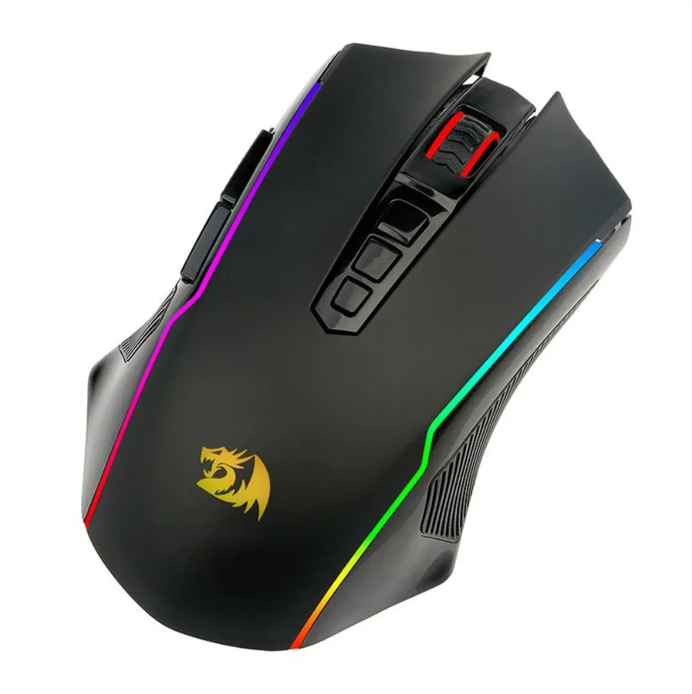
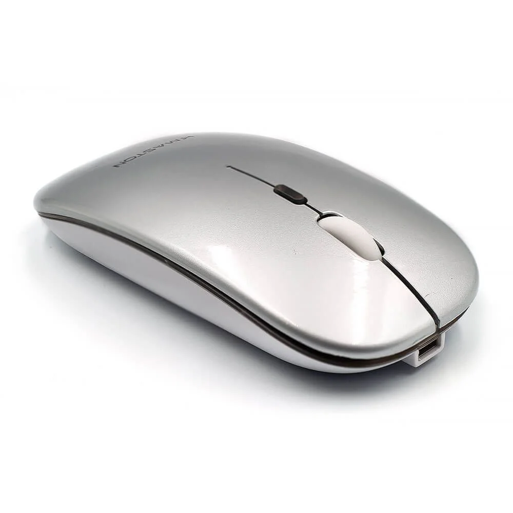

O que é um Mouse?
O mouse é um dispositivo apontador usado para interagir com a interface gráfica do computador. Ele permite o controle preciso do cursor, facilitando a navegação e a execução de tarefas.
Tipos de Mouse

Óptico/Laser
Rastreamento por luz; alta precisão para uso geral.

Gamer
DPI ajustável, botões extras e customização.

Ergonômico
Desenhado para reduzir esforço e prevenir lesões.

Sem fio
Conexão via Bluetooth ou receptor USB para mobilidade.